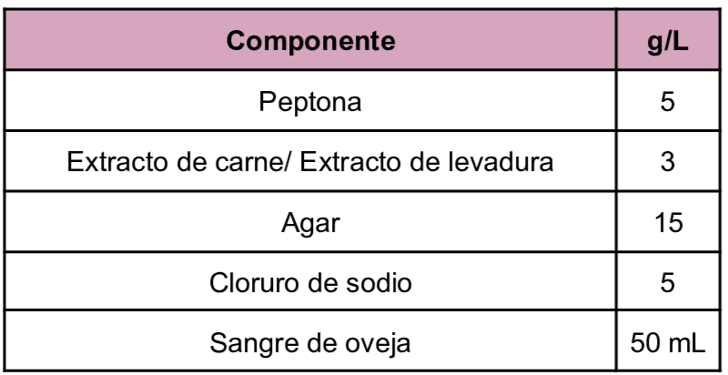
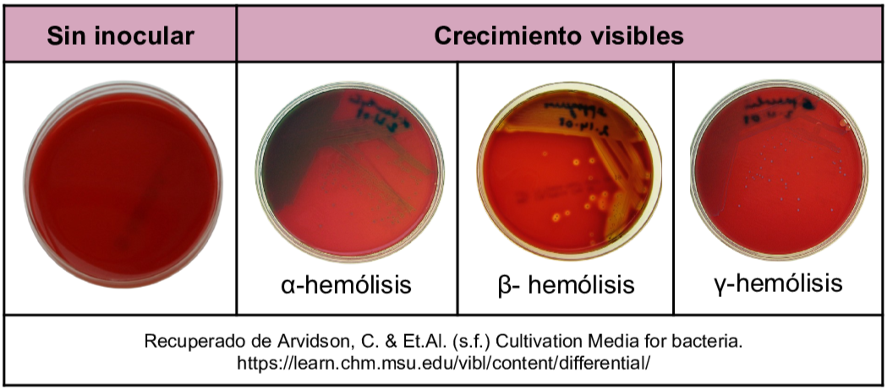

Medio enriquecido utilizado para el cultivo y desarrollo de microorganismos fastidiosos, derivado de eso el medio también es diferencial ya que permite detectar la hemólisis (destrucción de los glóbulos rojos) causada por toxinas citolíticas de algunos microorganismos. Es un medio con base de agar nutritivo al que se le adiciona sangre de oveja. Las peptonas proveen la fuente de nitrógeno, vitaminas y aminoácidos esenciales por otro lado el cloruro de sodio tiene la función del balance osmótico y el agar es incorporado como agente solidificante.
Composición

pH a 25°C 7.0±0.2
Resultados Posibles
Se puede esperar un crecimiento de tipo variado dependiendo del microorganismo inoculado, se pueden identificar tres tipos de hemólisis:

Referencias
Aryal, S. (2022) Blood Agar- Composition, Preparation, Uses and Pictures. https://microbiologyinfo.com/blood-agar-composition-preparation-uses-and-pictures/
MCD Lab (2025) Agar Sangre/Agar Chocolate. https://mcd.com.mx/index.php?controller=attachment&id_attachment=26761
Arvidson, C. & Et.Al. (s.f.) Cultivation Media for bacteria. https://learn.chm.msu.edu/vibl/content/differential